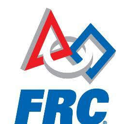
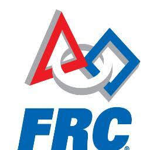

I first
discovered my passion for programming around the age of 12 when I
stumbled upon the game making tool called Unity. In the time
since, I have been constantly working towards improving my
abilities. I am extremely grateful for the amazing opportunities
that I have been given which have allowed me to hone and develop
my skill set. I make sure to utilize them in a productive way in
order to help myself in addition to teaching and assisting
others.
I attended Pacific Beach Middle School in the
17-18 school year and graduated with a 4.0 GPA. In addition to
this, I attended UCSD Extension for a Certificate in
C/C++ Programming which I obtained September 2018. I
am currently a sophomore at Mission Bay High School and hold a
Cumulative 4.63 GPA.
I currently
take part in many extracurriculars that I love doing. I am a
co-founder of the Mission Bay High School Entrepreneurship Club.
I am also a member of the Track & Field team. In addition, I am
violinist in my school's symphony
orchestra and one of the student leaders in our robotics
team's programming division.
The work that I do
is honest and filled with the very passion that drives me to push
my limits farther and farther each passing day. Over the past few
years, I have had the opportunity to interact with and learn from
amazing people in the software industry.
And yes...
I have
friends. In my free time I enjoy going out with friends and I
also occasionally play some video games with them as well. I also
love staying healthy through running which is why I am an active
member of my school's Track & Field team!
Work
Experience
Robolink Summer
2019 Internship
Technical
Skills
Full-stack Application Development | (C, C++, Python)
Full-stack Web Programming | (React, MaterializeCSS, NodeJS)
Fundamentals | (A Solid Grasp of Fundamental Algorithms &
Datastructures)
Project Utilites | (Git [Github], Docker [Containerized Apps], PM
Software [Trello])

 
